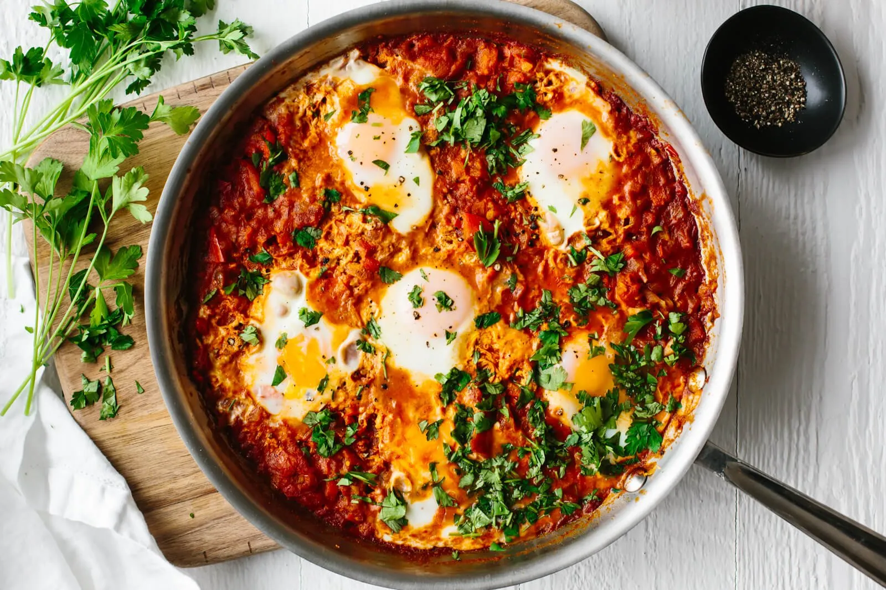

Shakshuka

Ingredients
- 2 tablespoons olive oil
- 1 onion, chopped
- 1 red bell pepper, chopped
- 3 cloves garlic, minced
- 1 teaspoon ground cumin
- 1 teaspoon smoked paprika
- 1/2 teaspoon ground cayenne pepper (adjust to taste)
- 1 can (14 oz) diced tomatoes
- Salt and pepper to taste
- 4-6 large eggs
- 2 tablespoons chopped fresh cilantro or parsley (for garnish)
- Crumbled feta cheese
Instructions:
- Heat olive oil in a large skillet over medium heat. Add chopped onion and red bell pepper. Cook until softened, about 5-7 minutes.
- Add minced garlic, ground cumin, smoked paprika, and ground cayenne pepper to the skillet. Stir and cook for an additional 1-2 minutes until fragrant.
- Pour in the diced tomatoes with their juices. Season with salt and pepper to taste. Bring the mixture to a simmer and cook for about 10-15 minutes, stirring occasionally, until the sauce thickens slightly.
- Using a spoon, make small wells in the tomato sauce. Crack the eggs one by one into the wells.
- Cover the skillet and let the eggs cook in the tomato sauce until the whites are set but the yolks are still runny, about 5-7 minutes. If you prefer firmer yolks, cook for a few minutes longer.
- Once the eggs are cooked to your liking, remove the skillet from heat. Garnish with chopped cilantro or parsley and crumbled feta cheese if desired.
- Serve the Shakshuka hot directly from the skillet, with crusty bread or pita for dipping.
Enjoy your delicious Shakshuka! Adjust the seasonings and spices according to your taste preferences
Return to the front page